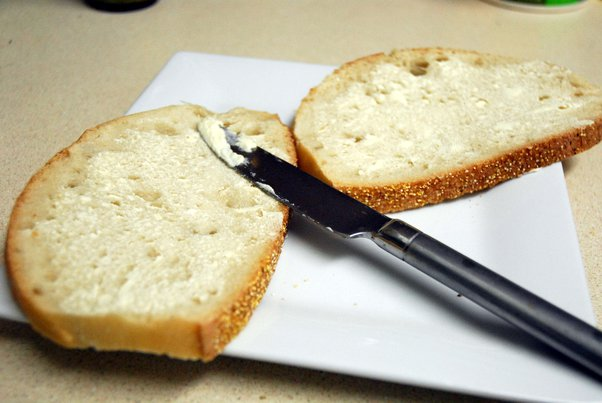

Butter Sandwich

Description
Do you like Texas Roadhouse rolls? Well this next recipe is nothing like that. This is what poverty tastes like.
Ingredients
- 2x Slices of bread. Use the "Sandwich" bread from the Hotdog recipe.
- Butter
Steps
- Put your slices of bread on a plate.
- Using a spoon, scoop butter out of the tub or off of the stick, and spread on bread.
- Enjoy.